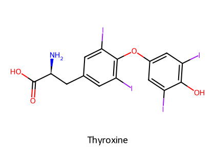
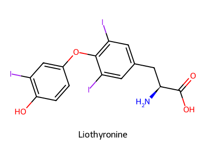
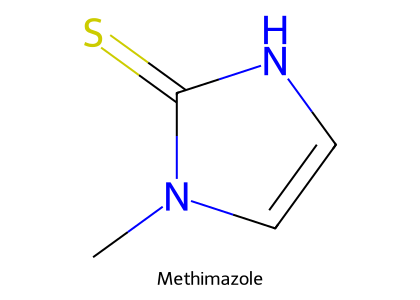
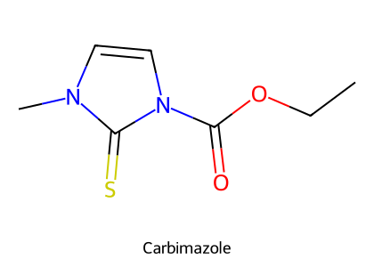
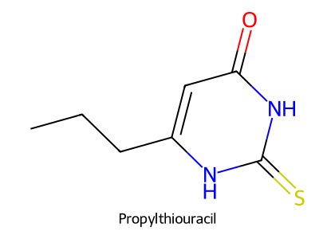
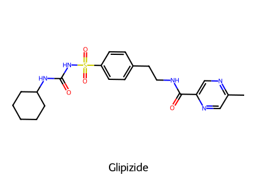
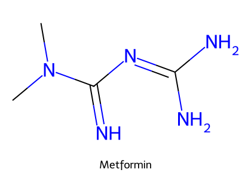

重點摘要
Hormone 1-3 是三份講義合併：腦下垂體（下視丘發號施令、前葉分泌促激素、後葉放出 oxytocin 與 ADH）、甲狀腺（T4 是前驅激素、T3 才是主角；狗常甲低、貓常甲亢）、胰臟（insulin 讓血糖進細胞，glucagon 把血糖拉回來）。讀藥物時一直問兩件事：這是胜肽還是類固醇／甲狀腺素（胜肽口服會被分解，只能注射；甲狀腺素口服有效），以及這個藥是在補激素、擋激素，還是拿來做診斷。
- Bromocriptine、Cabergoline 是 D2 促效劑 → 抑制 prolactin → 治療假懷孕、溢乳、誘發黃體溶解；反過來，phenothiazine 等 D2 拮抗劑會增加 prolactin。
- Somatotropin（GH）：幼犬腦下垂體侏儒症（豬 GH = 犬 GH）；Sometribove 增加乳牛泌乳量（2025 期末考題）；副作用是糖尿病。
- ADH 由後葉釋放（下視丘製造）；V1 管血管收縮、V2 管腎臟水再吸收。Desmopressin 是 V2 選擇性長效類似物：治療中樞性尿崩症，並可提高 vWF 治療 von Willebrand disease——但不能預防血栓。
- T4 是前驅激素，T3 活性高 3–10 倍；甲狀腺激素主要經脫碘代謝。替代療法首選 levothyroxine（T4），不建議用 T3。
- Methimazole 是貓甲亢首選，抑制甲狀腺過氧化酶；因為只抑制合成不影響釋放，需 1–3 週等體內儲存的 T4 消耗完。Carbimazole 在體內轉成 methimazole。
- Insulin 作用時間：regular（短效、清澈，可 IV，用於 DKA）＜ NPH／Lente（中效、混濁懸浮）＜ PZI、glargine（長效）。
- Sulfonylureas（glipizide）阻斷 β 細胞 ATP-敏感 K⁺ 通道 → 促進 insulin 分泌；Metformin 不促進 insulin 分泌，是降低肝糖輸出、增加胰島素敏感性（2025 期末考題）。
- Glucagon 治療 insulin 過量的低血糖，但不可用於胰島素瘤與嗜鉻細胞瘤；Diazoxide 打開 K⁺ 通道抑制 insulin 釋放，用於無法手術的胰島素瘤；Octreotide 為 somatostatin 類似物。
本頁藥物總覽
劑量與途徑取自講義、HBK Ch.12 劑量附表與 VPT10；臨床使用以院內規範為準。
| 藥物 | 機轉／類別 | 途徑與參考劑量 | 用途 |
|---|---|---|---|
| TRH、GnRH、CRH、GHRF | 下視丘釋放激素（胜肽） | 注射 | 診斷；GnRH：隱睪、誘發排卵、免疫去勢疫苗 |
| 豬 GH | 生長激素（經 IGF-1 作用） | SC 0.1 IU/kg 每週 3 次，共 4–6 週（講義） | 幼犬腦下垂體侏儒症 |
| Sometribove（Posilac®） | 重組牛 somatotropin 長效劑 | SC 500 mg 每 2 週，產後第 9 週起 | 增加乳牛泌乳量（美國使用、歐盟禁用） |
| Bromocriptine | 麥角衍生物，D2 促效劑 | PO 10–15 μg/kg q12h（HBK：3–5 天終止妊娠；10–14 天治假懷孕） | 溢乳、假懷孕、黃體溶解 |
| Cabergoline | 麥角衍生物，D2 促效劑（比 bromocriptine 強） | PO 5 μg/kg q24h 5–10 天（HBK） | 假懷孕、誘發發情 |
| Ergonovine | α、5-HT、DA 受體促效 → 平滑肌收縮 | 犬 PO 0.2 mg；母馬 IM 1–3 mg（HBK） | 子宮收縮、產後出血（併 oxytocin） |
| ACTH（1-24）、CRH、TSH、TRH | 促激素／釋放激素 | IV（ACTH：犬 250 μg、貓 125 μg） | 刺激試驗 |
| Oxytocin | 九胜肽，子宮收縮＋乳汁排出 | 注射 | 誘發分娩、子宮無力、無乳（排乳，非催乳） |
| Vasopressin（ADH） | V1（血管）＋V2（腎） | IV／IM／SC（胜肽，不可口服） | 尿崩症診斷與治療 |
| Desmopressin（DDAVP） | 長效合成類似物，V2 選擇性 | SC／IV；另有鼻用與口服錠（VPT10）；vWD：1 μg/kg SC 或稀釋後 IV 10 分鐘 | 中樞性尿崩症、von Willebrand disease |
| Lysine-8-vasopressin（LVP） | 豬型 ADH，作用較短 | 鼻噴 | 中樞性尿崩症 |
| Levothyroxine（T4） | 合成甲狀腺素 | PO 犬 20 μg/kg q24h、貓 50–100 μg/隻 q24h（HBK）；有注射劑（黏液水腫昏迷） | 甲狀腺低下（所有物種首選） |
| Liothyronine（T3） | 合成 T3 | PO 犬 4–6 μg/kg q8h（HBK） | 不建議用於替代療法 |
| Methimazole | Thioamide，抑制甲狀腺過氧化酶 | PO 貓 2.5–10 mg/隻 q8–12h（HBK） | 貓甲亢首選 |
| Carbimazole | 前驅藥 → methimazole | PO | 貓甲亢；GI 副作用較少 |
| Propylthiouracil（PTU） | Thioamide | PO | 副作用嚴重，已不建議用於貓 |
| Ipodate | 含碘顯影劑；抑制 T4→T3 | PO 100–200 mg/貓/天（HBK） | 無法耐受 methimazole 的貓；甲狀腺風暴輔助 |
| Lugol's solution（KI）、perchlorate、thiocyanate | 碘化物／陰離子抑制劑 | PO | 甲亢輔助 |
| ¹³¹I（Na¹³¹I） | β 射線破壞甲狀腺濾泡 | SC 1–5 mCi（貓，HBK） | 貓甲亢最有效的根治法 |
| Regular insulin | 短效結晶鋅胰島素 | SC／IM／IV（唯一可 IV 的胰島素） | 糖尿病酮酸中毒 |
| NPH、Lente（Vetsulin®） | 中效 | SC：Vetsulin 犬 0.5–1.0 IU/kg q12–24h（HBK） | 穩定期糖尿病 |
| PZI Vet® | 長效（90% 牛＋10% 豬） | SC：貓 1–5 IU/隻 q12–24h（HBK） | 貓糖尿病 |
| Insulin glargine（Lantus®） | 長效人胰島素類似物 | SC | 糖尿病 |
| Glipizide | Sulfonylurea，阻斷 ATP-敏感 K⁺ 通道 | PO（隨食物）2.5–5 mg/貓 q8–12h（HBK） | 貓糖尿病（部分有效） |
| Metformin | Biguanide，↓肝糖輸出、↑胰島素敏感性 | PO 貓 2–5 mg/kg q12h（HBK），隨餐 | 貓糖尿病，常與 sulfonylurea 合用 |
| Acarbose | α-glucosidase 抑制 | PO（隨餐） | 與 insulin 合用可降低 insulin 需求量 |
| Glucagon | 升血糖激素 | IM（講義：低血糖時 IV glucose 或 IM glucagon） | insulin 誘發的低血糖 |
| Octreotide | Somatostatin 八胜肽類似物 | 深部 SC；犬胰島素瘤 10–20 μg q8–12h（VPT10） | 胰島素瘤、胃泌素瘤 |
| Diazoxide | 打開 β 細胞 K⁺ 通道 → 抑制 insulin 釋放 | PO 起始 10 mg/kg/day 分兩次，不超過 40 mg/kg/day（VPT10） | 無法手術的胰島素瘤 |
腦下垂體分區與下視丘釋放激素
受下視丘調控，調節多個內分泌器官（甲狀腺、腎上腺、胰臟、性腺）；分泌生長激素與各種促激素（tropic hormones）。
與自主神經系統、鹽水恆定有關；釋放抗利尿激素（vasopressin）與 oxytocin——兩者都在下視丘合成，經軸突運到後葉儲存釋放。
| 下視丘激素 | 結構 | 作用 | 藥理應用 |
|---|---|---|---|
| TRH | 三胜肽；t½ 5 分鐘；cAMP | 促 TSH 釋放 | 甲狀腺疾病診斷 |
| GnRH（LHRH） | 十胜肽 | 促 LH、FSH 釋放 | 隱睪症、誘發排卵；GnRH 疫苗做免疫去勢（產生抗 GnRH 抗體 → LH／FSH 下降 → 睪固酮下降） |
| CRH | 41 胺基酸多胜肽 | 促 ACTH 釋放；壓力反應的中樞整合者 | HPA 軸診斷 |
| Prolactin 釋放抑制因子 | Dopamine | 抑制 prolactin | Bromocriptine（DA 促效劑）模擬此作用 |
| GHRF | 40 胺基酸 | 促 GH 釋放 | 診斷 |
| GH-RIH（Somatostatin） | 十四胜肽；也由消化道與胰臟分泌 | 抑制 GH，也抑制 TSH、ACTH、insulin、glucagon 分泌 | Octreotide（見第 14 節） |
HBK Ch.12：胜肽與蛋白質激素口服後在消化道被破壞，只能注射；它們通常不穿過 BBB，血漿半衰期只有 5–20 分鐘，但生物作用可持續數小時。相反地，類固醇與甲狀腺激素口服吸收良好（天然類固醇因肝臟代謝快，只有甲狀腺素與合成類固醇口服有效），且 90% 以上與血漿蛋白結合，半衰期以小時到天計。這就是講義在 ADH 投影片上問「為什麼要 IV、IM、SC？」的答案。
生長激素 Growth Hormone（Somatotropin）
| 用途 | 藥物與用法 | 副作用 |
|---|---|---|
| 幼犬腦下垂體侏儒症 | 豬 GH（與犬 GH 相同）0.1 IU/kg SC 每週 3 次，4–6 週 | 糖尿病：治療前與治療期間每週驗血糖 |
| 增加乳牛泌乳 | Sometribove（重組牛 somatotropin 類似物長效注射劑）SC 500 mg 每 2 週，產後第 9 週起；美國使用，歐盟禁用（牛奶 IGF-1 疑慮） | 初期採食量下降、乳房炎；類 prolactin 黃體作用（黃體囊腫、促性腺激素下降、子宮疾病）；懷孕動物妊娠期縮短、出生體重下降、胎衣滯留 |
HBK Ch.12：GH 受體活化 JAK2–STAT 路徑促進轉錄；GH 結構與 prolactin、胎盤泌乳素相似，泌乳效果可能與類 prolactin 活性有關。HBK 列出的 sometribove 副作用另有注射部位刺激、跛行、懷孕率下降與雙胎增加。
促性腺激素與泌乳素相關藥物
雌：卵泡成熟、分泌 estrogen（LH 也參與）；雄：促進精子生成。
雄：Leydig 細胞產生 testosterone；雌：排卵、形成黃體、合成分泌 progesterone。臨床用 hCG 取代。
Prolactin
- 由腦下垂體與胎盤合成；作用於乳腺產乳；抑制促性腺激素（哺乳期不排卵）；吸吮時釋放；睡眠時分泌高峰。
- Prolactin 是黃體營養激素（luteotropic）：維持黃體 → 抑制 prolactin 就能造成黃體溶解。
- D2 拮抗劑（phenothiazines 等主要鎮靜劑）會增加 prolactin 釋放；Metoclopramide 也有此作用（見 腸胃道用藥）。
| 藥物 | 機轉 | 獸醫用途 | 途徑與劑量（HBK） | 副作用 |
|---|---|---|---|---|
| Bromocriptine | 麥角衍生物、D2 促效 → prolactin↓ | 溢乳、假懷孕、誘發黃體溶解（有時是誘發分娩的前提）；人：退奶、高泌乳素血症 | PO 10–15 μg/kg q12h | 嘔吐、鎮靜、低血壓（α 拮抗）；泌乳動物無乳 |
| Cabergoline | 同上，D2 作用較強；t½ 60 h（人） | 假懷孕、誘發發情 | PO 5 μg/kg q24h 5–10 天 | 同上 |
| Ergonovine（ergometrine） | α、5-HT、DA 受體促效 → 子宮平滑肌收縮 | 併 oxytocin 處理產後出血 | 犬 PO 0.2 mg；母馬 IM 1–3 mg | 過量：CNS 興奮、高血壓、嘔吐 |
麥角生物鹼由真菌產生：Claviceps purpurea 感染黑麥、燕麥、小麥、大麥；Acremonium coenophialum 產生 ergovaline，是牛毛草（fescue）中毒的主要毒素。Ergovaline 是強力 5-HT2 血管收縮劑，作用於牛羊的子宮、臍帶、胎盤與尾動脈。症狀稱為 ergotism：急性神經症狀與痙攣、慢性壞疽；少量時造成無乳、窩仔數少、出生體重低、增重下降與流產。人用 ergotamine＋caffeine 治偏頭痛（5-HT1B/1D）。
TSH、ACTH 與刺激試驗
- TSH：刺激甲狀腺激素合成與釋放；用於診斷甲狀腺疾病。
- ACTH：39 個胺基酸，刺激皮質類固醇合成與釋放；診斷上廣泛使用 ACTH 1-24。
| 試驗 | 評估什麼 | 用法（講義） |
|---|---|---|
| CRH 刺激試驗 | 腦下垂體分泌 ACTH 的能力 | CRH 1 μg/kg IV；0 與 0.5 小時測血漿 ACTH |
| ACTH 刺激試驗 | 腎上腺功能；腎上腺皮質增生與腫瘤 | IV：犬 250 μg、貓 125 μg；cortisol 在 60–90 分鐘達峰值 |
| TRH 刺激試驗 | 甲狀腺軸 | — |
| TSH 刺激試驗 | 甲狀腺軸 | — |
VPT10 Ch.29 的 ACTH 刺激試驗：犬與馬在 IV 後 1 小時採樣，貓在 IV 後 30 分鐘測 cortisol 峰值；健康動物刺激後 cortisol 上升 50–100%。長期使用糖皮質素的犬可能基礎值正常但刺激後上升不到 50%，這類犬在壓力時需要補充（見 類固醇藥理）。
後葉激素：Oxytocin 與 ADH重要
Oxytocin
- 刺激子宮協調性收縮 → 誘發分娩。
- 排乳：收縮乳腺肌上皮細胞，治療無乳症，但不是催乳劑（not galactopoietic）——它不增加產乳量，只讓已產生的乳汁排出。
- 副作用：子宮過度刺激、子宮難產。
HBK Ch.12：使用 oxytocin 誘發分娩時，子宮頸必須已擴張、胎兒胎位必須正常；有黃體存在時效果差。否則強力收縮推不出胎兒，反而造成難產或子宮破裂。
ADH（Vasopressin）
- Arginine-vasopressin：貓、犬、馬、人；Lysine-ADH：豬。
- ACTH 不會刺激 ADH 分泌（考古題）；反過來 VPT10 列出 V1 受體在腦下垂體前葉會增加 ACTH 釋放，並抑制 renin 釋放。
| 藥物 | 受體 | 途徑 | 用途 |
|---|---|---|---|
| Vasopressin（水溶液） | V1＋V2 | IV、IM、SC（胜肽，口服被分解）；t½ 約 20 分鐘 | 尿崩症診斷（修正式禁水試驗後給予）與治療 |
| Desmopressin（DDAVP，desamino-D-arginine vasopressin） | V2 選擇性，長效、幾乎無升壓作用 | SC 注射；鼻用與口服錠（VPT10） | 中樞性尿崩症；von Willebrand disease 與肝硬化或藥物相關的出血 |
| LVP（lysine-8-vasopressin） | — | 鼻噴 | 中樞性尿崩症；作用時間較短 |
中樞性：缺 ADH，給外源 ADH 後尿液濃縮 → 用 ADH／desmopressin 治療。腎性：腎小管對 ADH 沒反應 → 給 ADH 無效（VPT10：常見次發原因包括子宮蓄膿、肝病、腎上腺皮質功能亢進、甲亢、高血鈣、腎衰竭、腎盂腎炎）。
水分過多、腦水腫——使用 ADH 類藥物時要限制飲水（考古題：LVP 治療尿崩症若不限水 → 腦水腫）。
講義把 desmopressin 也列為全身性止血劑：經 V2 受體從內皮細胞釋放儲存的 vWF → 縮短出血時間，用於 vWD 動物的微血管出血。VPT10 Ch.25 補充：犬 1 μg/kg SC，或稀釋於 20 mL 生理食鹽水 IV 10 分鐘以上；作用約 2 小時，重複給藥效果下降（儲存池耗盡）。它是讓血比較容易凝，所以「預防血栓」不是它的作用（2025 期末考第 34 題）。同一張投影片的 protamine sulfate 是 heparin 解毒劑（見 凝血相關藥物）。
甲狀腺激素的合成、運輸與代謝


結構式依 PubChem 資料以 RDKit 自繪。兩者都是由酪胺酸（tyrosine）碘化後偶合而成。
合成步驟（講義）
運輸與代謝
- 血漿蛋白結合：主要為 thyroxine-binding globulin（TBG），其次 TBPA、白蛋白、脂蛋白。犬 T4：60% TBG、17% TBPA、12% 白蛋白、11% HDL。
- 代謝以脫碘（deiodination）為主（約 70%），其次葡萄糖醛酸與硫酸結合。
- T4 外環單脫碘 → T3（活性高 3–10 倍）；30–40% T4 轉成 T3，所以 T4 的代謝作用幾乎都來自轉換出的 T3——T4 可視為前驅激素。
- T4 內環脫碘（40%）→ reverse T3（無活性）。
| 半衰期 | 人 | 犬 | 貓 |
|---|---|---|---|
| T3 | 1 天 | 約 8 小時 | — |
| T4 | 7 天 | 12–24 小時 | 11 小時 |
生理作用
- 決定基礎代謝率：產熱、增加 Na⁺/K⁺-ATPase 表現與活性。
- 生理量為同化作用（生長發育必需，與 GH、insulin 協同）；過量為異化作用（糖質新生、蛋白質分解）。
HBK Ch.12：T3 是心血管興奮劑，增加心輸出量並提高心肌對兒茶酚胺的敏感度（增加 α、β 受體表現）——這是甲亢貓心搏過速、高血壓與心肌肥厚的藥理基礎。T3 也降低 LDL（增加肝臟 LDL 受體）。犬與人的血漿蛋白結合不同，所以人的劑量不能直接用在犬。
甲狀腺疾病與替代療法
貓最常見的內分泌疾病（中老年貓）；貓多為甲狀腺增生或腺瘤，犬多為腺癌。症狀：體重下降、過動、多渴多尿、腹瀉、心搏過速、掉毛。末期可能變成淡漠型甲亢（嗜睡、厭食）。HBK：其他物種多為腺癌、預後差，所以抗甲狀腺藥只建議用於貓。
犬最常見的內分泌疾病；馬也有，貓少見（HBK：貓甲亢治療過度也會造成）。常見原因：缺碘、環境或食物中的致甲狀腺腫物質。症狀：基礎代謝率下降、皮膚冰冷、嗜睡、沉鬱、無力。
| 製劑 | 特性 | 評價 |
|---|---|---|
| 動物甲狀腺乾燥製劑 | T3／T4 含量不穩定、便宜 | 大動物仍有些使用 |
| Levothyroxine（合成 T4） | 符合生理；口服與注射劑（黏液水腫昏迷） | 所有物種首選 |
| Liothyronine（合成 T3） | 半衰期較短、不符合生理 | 不建議用於替代療法 |
T4 半衰期長、血中濃度穩定，由組織依需要轉成 T3（符合生理）；直接補 T3 半衰期短、濃度起伏大。HBK 另補充：T4 能維持腦部較高的甲狀腺激素活性。考古題「賀爾蒙補充療法建議優先使用 T3」是錯誤敘述。
終生替代療法的原則（講義）
- 初始診斷要謹慎（犬 TSH 檢測），因為一旦開始就是終生用藥。
- 監測：臨床表現（被毛、體重）＋血清 T3、T4 濃度。
- 考慮生理：老年動物減少 T4 劑量；人類冬天需要增加劑量——戶外飼養的犬是否也需要？
- 犬起始劑量：levothyroxine PO 20 μg/kg q24h（HBK），之後依監測調整。過量會出現甲亢症狀。
抗甲狀腺藥物重要
兩種策略：用藥物改變甲狀腺激素的合成或作用，或用手術、放射線破壞甲狀腺。致甲狀腺腫物質（goitrogens）抑制 T3、T4 分泌 → TSH 上升 → 甲狀腺腫大。例子：thiocyanate（抑制碘攝取）、thiourea 衍生物、十字花科（Brassica）種子中的 goitrin。



結構式依 PubChem 資料以 RDKit 自繪；三者都含 thioamide（C=S 與 N 相連）結構，這是抑制過氧化酶的關鍵。
| 類別 | 藥物 | 機轉 | 重點 |
|---|---|---|---|
| 1. Thioamides | Propylthiouracil、Methimazole、Carbimazole | 主要：抑制甲狀腺過氧化酶催化的反應 → 阻斷碘有機化（與偶合）；次要：抑制周邊 T4、T3 脫碘 | 治療甲狀腺毒症的主要藥物；只影響合成不影響釋放，需 1–3 週等儲存的 T4 耗盡 |
| 2. 陰離子抑制劑 | Perchlorate、thiocyanate（SCN⁻） | 阻斷甲狀腺攝取 I⁻ | 用於碘誘發的甲亢 |
| 3. 碘化物 | Potassium iodide（Lugol's solution） | — | — |
| 4. Ipodate | 放射顯影劑 | 抑制 T4→T3 轉換；也干擾甲狀腺激素作用 | 甲狀腺風暴輔助治療；無法耐受 thioamides 或碘化物時；毒性與碘化物相似、相對低 |
| 5. 放射性碘 | ¹³¹I | 被甲狀腺濃縮吸收，β 射線破壞濾泡 | 貓甲狀腺腫最有效、最適合的根治法 |
Thioamide 個別比較
| Propylthiouracil | Methimazole | Carbimazole | |
|---|---|---|---|
| 效力 | 1 | 約 10 倍 | 體內轉成 methimazole |
| 口服生體可用率 | 50–80% | 貓約 80% | — |
| 半衰期 | 1.5 h | 貓 2–10 h（HBK 平均 6.6 h） | — |
| 副作用 | 厭食、嘔吐、嗜睡；自體免疫溶血性貧血、血小板減少、顆粒性白血球缺乏 | 與 PTU 相似（HBK 另列搔癢、肝病變、出血、白血球減少、嗜酸性球增多） | GI 副作用較少 |
| 評價 | 已不建議用於貓 | 貓首選；PO 2.5–10 mg/隻 q8–12h（HBK） | — |
講義列出四大優點：效果好、給藥容易、費用低、無痛。HBK 補充：¹³¹I 半衰期 8 天，放出 β 粒子與 X 射線；貓 SC 1–5 mCi，約 5% 需要第二劑；T4、T3 在 1–2 週內恢復正常；可避免手術切除傷到副甲狀腺；治療後需住院 1–4 週，排泄物要妥善保存至放射性消失。也用於貓犬的甲狀腺腺癌。
胰島與 Insulin
| 胰島細胞 | 比例 | 激素 | 作用 |
|---|---|---|---|
| A（α） | ~25% | Glucagon | 升血糖、動用肝醣 |
| B（β） | ~70% | Insulin | 同化／儲存激素 |
| D（δ） | <5% | Somatostatin | 旁分泌抑制 insulin、glucagon |
| F | 微量 | Pancreatic polypeptide | 協助消化 |
- 結構：A、B 兩條鏈；β 細胞先合成單鏈 proinsulin → 高基氏體處理、包進顆粒 → 水解成 insulin 與 C-peptide；顆粒內以 2 個鋅原子配 6 個 insulin 分子的結晶儲存。
- 拮抗 insulin 的激素（升血糖）：glucagon、epinephrine、growth hormone、glucocorticoids。
- 清除：肝臟清除胰臟釋出 insulin 的 60%；腎臟清除內生性 insulin 的 35–40%（接受 insulin 治療的糖尿病患者可高達 60%）。分解從切斷 A、B 鏈之間的雙硫鍵開始。
- 葡萄糖運輸：葡萄糖是水溶性，需要 GLUT 載體。Insulin 讓 GLUT4 插入肌肉與脂肪細胞膜；腦使用 GLUT3，不依賴 insulin。
HBK Ch.12：insulin 受體是酪胺酸激酶，活化後經 IRS 促進 GLUT4 移到細胞膜、肝醣與蛋白質合成。血漿半衰期只有 5–10 分鐘，但生物半衰期長達數小時。Insulin 受體不是轉錄因子（考古題：與 cortisol、estradiol、T3 的核受體不同）。
糖尿病
最重要的胰臟內分泌疾病：不適當的高血糖與代謝異常。Type I（IDDM）與 Type II（NIDDM）；高血糖造成「三多」：多尿、多渴、多食。
Insulin 製劑與糖尿病治療重要
| 製劑 | 作用時間 | 外觀與配方 | 途徑 | 教科書補充（HBK） |
|---|---|---|---|---|
| Regular insulin（crystalline zinc） | 短效：<15 分鐘起效，持續 5–7 h | 磷酸緩衝液加鋅，清澈溶液 | SC、IM、IV | 2–4 h 達峰；用於快速矯正 DKA；維持治療需一天打 4–5 次，不方便 |
| NPH（isophane） | 中效至長效：18–24 h | 加 protamine 減緩吸收；混濁懸浮液，SC 後慢慢溶解 | SC | 2 h 內起效、8–12 h 達峰、持續 24 h |
| Lente | 中效：18–24 h | 醋酸緩衝液加鋅，不含 protamine；大結晶 | SC | 7 份 ultralente＋3 份 semilente；豬 Lente（Vetsulin®）主要用於犬 |
| PZI（PZI Vet®） | 長效 | 90% 牛＋10% 豬 insulin，與 protamine 鋅形成微結晶懸浮液 | SC | 4 h 起效、16–18 h 達峰、最長 36 h；核准用於貓 |
| Insulin glargine | 超長效（人可達 24 h） | 人胰島素類似物；pH 4 時可溶，注射到 pH 7.4 組織形成微沉澱 | SC | 沒有明顯峰值，降血糖效果超過 24 h |
只有清澈的 regular insulin 可以 IV，混濁的懸浮液（NPH、Lente、PZI）只能 SC。2025 期末考第 36 題：作用時間最短的是 regular insulin。獸醫專用製劑只有兩種：Vetsulin®（Caninsulin®，豬 insulin zinc，犬貓核准）與 PZI Vet®（貓核准）。
犬貓糖尿病治療（講義）
- 目標：把血糖維持在輕度高血糖（150–200 mg/dL），避免低血糖。
- 複雜型（嘔吐的酮酸中毒病患）：IV 輸注或 IM 短效 regular insulin → 能進食不吐後轉為非複雜型方案。
- 非複雜型：中效或長效製劑，監測血糖。
- 牛酮症：insulin 是非常有效的抗酮劑，作為輔助治療，用於泌乳第一週發生、對葡萄糖或糖皮質素無反應的酮症；protamine zinc insulin 200–300 IU／頭（考古題：對乳牛 ketosis 最有療效的是 insulin）。
Insulin 最主要的副作用。CNS 症狀：意識混亂、過度興奮、痙攣。處理：IV glucose 或 IM glucagon。HBK：早期徵兆（心搏過速、飢餓）來自 epinephrine 釋放；嚴重低血糖最好用 IV glucose 輸注。
貓比犬更容易對人或豬 insulin 產生抗體；壓力會增加 epinephrine 與皮質類固醇 → 急性 insulin 阻抗；受體去敏感化也會造成阻抗。這就是糖尿病動物併用糖皮質素時 insulin 需求上升的原因（見第 15 節）。
注射以外的給藥途徑（講義）
貼片、幫浦、抗消化的口服劑型、吸入式 insulin（最有前景）。Exubera® 是第一個吸入式人用 insulin（2006 年核准，峰值 49 分鐘 vs regular insulin 105 分鐘；氣喘、支氣管炎、肺氣腫患者不建議），因售價高、銷售差於 2007 年下市；之後有 Afrezza®。
口服降血糖藥重要
四大類：sulfonylureas、biguanides、α-glucosidase 抑制劑、thiazolidinediones（glitazones，主要用於人）。HBK 指出 sulfonylureas 在獸醫很少用，因為多數糖尿病動物診斷時 β 細胞已大量喪失——沒有 β 細胞，促分泌藥就沒有作用對象。


結構式依 PubChem 資料以 RDKit 自繪。
※ Diazoxide 的作用正好相反：打開 ATP-敏感 K⁺ 通道 → 過極化 → insulin 不釋放（第 14 節）。
| Sulfonylureas（Glipizide） | Metformin | Acarbose | |
|---|---|---|---|
| 機轉 | 抑制 ATP 依賴性 K⁺ 通道 → 刺激 insulin 分泌 | 不影響 insulin 分泌；↓肝臟糖質新生／糖輸出、↑肌肉與脂肪的 insulin 敏感性（HBK 另列：減少 GI 葡萄糖吸收） | α-glucosidase 抑制：抑制分解澱粉的 α-amylase 與切出葡萄糖的寡糖／雙糖酶 → 延緩醣類吸收 |
| 降血糖性質 | 降血糖（可造成低血糖） | 抗高血糖，但不會造成低血糖 | 延緩餐後血糖上升 |
| 藥動 | 人：GI 吸收佳、高蛋白結合、肝代謝腎排除；犬貓資料少；貓的作用很短（約 1 小時回到基線） | 口服吸收 35–65%；t½ 約 12 h；主要經腎臟排除 | 微生物來源的寡糖 |
| 獸醫使用 | 可用於部分糖尿病貓；PO 隨食物（HBK） | 貓，常與 sulfonylurea 合用；PO 隨餐 | 與 insulin 或口服藥合用；犬併用可減少 insulin 用量；昂貴 |
| 副作用 | 低血糖、肝毒性（HBK：過量造成的低血糖遠比 insulin 輕） | 腎功能不全禁用 | GI 不適 |
2025 期末考第 37 題：「metformin 與 glipizide 都促進胰島素分泌」是錯誤敘述。考古題：acarbose 最正確的敘述是「與 insulin 合併使用可降低 insulin 所需劑量」，而不是單獨使用或促進 insulin 分泌。
Glucagon、胰島素瘤與 Somatostatin 類似物
| 藥物 | 作用 | 用途 | 禁忌與注意 |
|---|---|---|---|
| Glucagon | 升血糖、減少肝醣；也促進 β 細胞釋放 insulin；刺激嗜鉻細胞瘤釋放兒茶酚胺 | insulin 誘發的低血糖 | 不可用於胰島素瘤與嗜鉻細胞瘤：會誘發腫瘤釋放激素 |
| Octreotide | Somatostatin 的八胜肽類似物 | 人：肢端肥大症（GH 過多）；犬胰島素瘤與胃泌素瘤 | VPT10：深部 SC，犬 t½ 約 75 分鐘，作用可達 12 h；胰島素瘤 10–20 μg q8–12h；並非所有腫瘤有反應（缺乏受體） |
| Diazoxide | 增加 β 細胞 ATP-敏感 K⁺ 通道開放時間 → 過極化 → 抑制 insulin 釋放；強力升血糖 | 無法手術的胰島素瘤；（人）高血壓急症的血管擴張劑 | VPT10：PO 起始 10 mg/kg/day 分兩次，不超過 40 mg/kg/day；當血管擴張劑時副作用為鈉水滯留、反射性交感與 renin 活化、高血糖、心肌缺血 |
腺瘤或腺癌自主分泌 insulin → 高胰島素血症、低血糖；報告於犬、貓、雪貂、牛、小型馬。
存在於胰島 D 細胞、下視丘與消化道；前驅物 → 24 胺基酸 → 14 胺基酸 somatostatin。旁分泌抑制 insulin 與 glucagon；延長胃排空；減少 gastrin 與胃酸；抑制 GH。
Sulfonylurea 關閉 ATP-敏感 K⁺ 通道 → 去極化 → insulin 釋放 → 降血糖。Diazoxide 打開同一種通道 → 過極化 → insulin 不釋放 → 升血糖（考古題：diazoxide 抑制 β 細胞分泌 insulin 的機轉是「增加鉀離子通透性」）。
臨床整合：共病與用藥
| 情境 | 藥理考量 | 處理方向 | 出處 |
|---|---|---|---|
| 糖尿病動物需要糖皮質素 | 糖皮質素是拮抗 insulin 的激素，促進糖質新生並造成 insulin 阻抗 | 盡量避免；必須使用時增加血糖監測，預期 insulin 需求上升；停用類固醇後要回頭調降 insulin，避免低血糖 | 講義；HBK |
| 甲亢貓合併腎病 | 甲亢增加心輸出量與腎血流，可能掩蓋腎功能下降 | 開始 methimazole 後追蹤腎指數；治療過度會造成醫源性甲低 | HBK（甲低段落）；腎血流部分為生理推理 |
| 糖尿病貓合併腎病 | Metformin 主要經腎臟排除 | 腎功能不全禁用 metformin | 講義 |
| 胰島素瘤動物低血糖發作 | Glucagon 會刺激腫瘤釋放 insulin | 不用 glucagon；改用 IV glucose；長期以 diazoxide、octreotide、糖皮質素控制 | 講義；VPT10 |
| 使用 D2 拮抗劑（phenothiazine、metoclopramide） | Prolactin 上升 | 假懷孕或溢乳的動物要注意；bromocriptine、cabergoline 正好相反 | 講義；VPT10 Ch.46 |
| 尿崩症動物使用 ADH 類藥物 | 水中毒、腦水腫 | 限制飲水；監測體重與血鈉 | 講義 |
| vWD 犬術前 | Desmopressin 釋放 vWF，作用約 2 小時、重複給效果下降 | 術前給予，搭配血液製品備用 | VPT10 Ch.25 |
| 懷孕動物 | Bromocriptine／cabergoline 造成黃體溶解；oxytocin 只能在子宮頸已開時使用 | 避免在不想終止妊娠的懷孕動物使用 D2 促效劑 | HBK |
考點整理
- 2025 期末：Q33 促進乳牛泌乳 → sometribove；Q34 不是 desmopressin 作用 → 預防血栓；Q36 作用最短 → regular insulin；Q37 「metformin 與 glipizide 都促進 insulin 分泌」錯誤。
- 內分泌考古：bromocriptine 主要用途 → 抑制乳汁分泌；octreotide 類似 somatostatin；ADH 由後葉分泌（前葉是錯的）；GH 在大動物用於促進泌乳；somatotropin 促進蛋白質合成、適應症為 pituitary dwarfism；ACTH 不會刺激 ADH 分泌；desmopressin 主要用於中樞性尿崩症；LVP 不限水 → 腦水腫；T4 主要代謝為脫碘；不建議優先用 T3；carbimazole 抑制 thyroxine 合成；ipodate 用於甲亢；triiodothyronine 不能治甲亢；methimazole 需 2–3 週是因為體內甲狀腺激素需時間消耗；insulin 受體不是轉錄因子；glipizide 屬口服降血糖藥；乳牛 ketosis 用 insulin；acarbose 與 insulin 併用可減少 insulin 用量；glucagon 治 insulin 誘發低血糖；diazoxide 增加 K⁺ 通透性。
以下是依講義與教科書推測的方向，並非出自歷屆國考題目：貓甲亢首選 methimazole 與放射性碘、犬甲低用 levothyroxine；desmopressin 的 V2 選擇性與 vWD 用途；insulin 製劑作用時間與可否 IV；sulfonylurea 與 diazoxide 的 K⁺ 通道相反作用；glucagon 在胰島素瘤的禁忌；bromocriptine／cabergoline 治療假懷孕。
學習重點整理
| 主題 | 一句話 |
|---|---|
| 胜肽激素 | 口服被分解、只能注射；類固醇與甲狀腺素可口服 |
| GH | 經 IGF-1 作用；犬侏儒症用豬 GH SC；sometribove 增加牛乳；副作用糖尿病 |
| Prolactin | D2 促效劑（bromocriptine、cabergoline）抑制 → 假懷孕、黃體溶解 |
| Oxytocin | 子宮收縮＋排乳；不是催乳劑；子宮頸要開 |
| ADH | V1 血管、V2 腎；desmopressin 為 V2 長效，治中樞性尿崩症與 vWD；限水防腦水腫 |
| 甲狀腺 | T4 為前驅、T3 活性高；脫碘代謝；levothyroxine 首選 |
| 抗甲狀腺 | Methimazole 貓首選、需 1–3 週；PTU 不建議；ipodate 抑制 T4→T3；¹³¹I 根治 |
| Insulin | Regular 短效清澈可 IV；NPH／Lente 中效；PZI／glargine 長效；低血糖用 IV glucose 或 IM glucagon |
| 口服藥 | Sulfonylurea 關 K⁺ 通道促分泌；metformin 不促分泌、腎病禁用；acarbose 延緩吸收 |
| 胰島素瘤 | Diazoxide 開 K⁺ 通道；octreotide；不可用 glucagon |